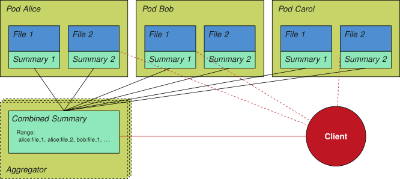
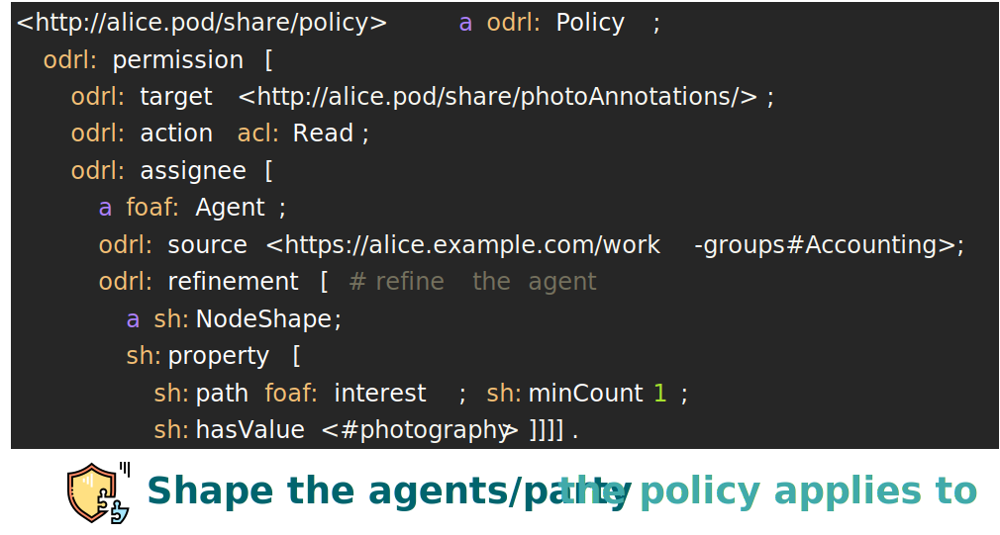
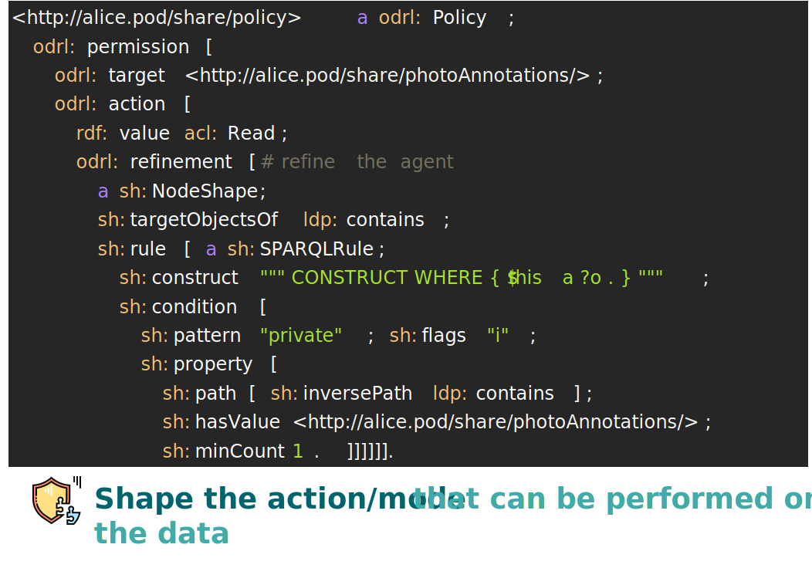
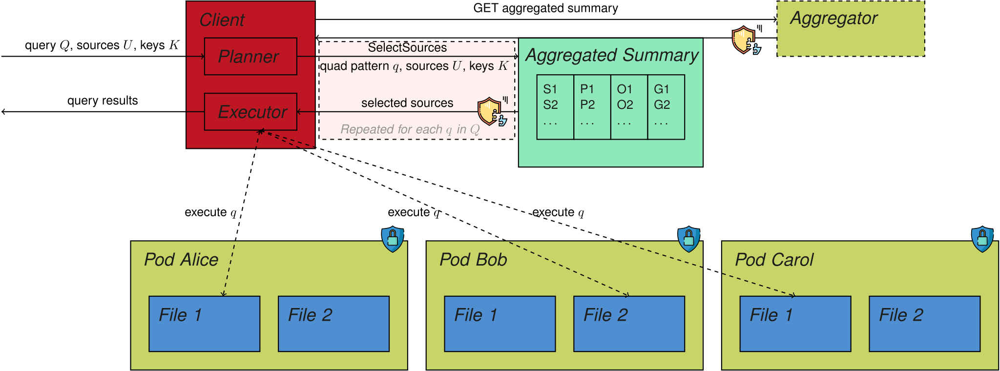

Accessing data the right way!
Privacy-preserving querying in decentralized environments
Privacy-Preserving Querying in Decentralized Environments
Ruben Taelman
Sabrina Kirrane
Simon Steyskal


Privacy-Preserving Aggregation

Shape-based Access Control

Shape-based Access Control

Privacy-Preserving Federated Querying
